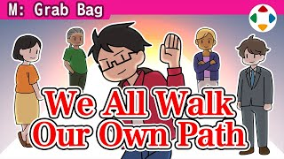
速览
樱井很早就进入业界，所以周围都是年长者，当然有前辈和业界先驱；但随着自己年纪增长，那样的人一个个不见了，他有时会想他们在哪里做什么。退休之类的不说，中途从游戏业消失的人多得是，当然也有很多只是他不知道去向。不限于游戏业，如果你认识的某位创作者突然音讯全无，希望不要说「那家伙完了」。意外地，有人在其他行业大获成功：取得某种专利赚了大钱的、在与游戏无关的行业做先进事情的，实际都有。即使活跃得不显眼，本人也可能找到了充实的工作。经验累积后开始做不同的事也很自然，一直待在同一个位置反而可能不普通。创作者未必一直做符合当时顾客或粉丝期望的事，但最好不要否定——也许在别处更被需要。每个人找到各自的位置、投入工作，每个人都有人生的道路；谁都有自由选择道路的权利，在不同的舞台上努力，这样从过去延续到现在。至于他自己，目前还在做游戏；但也在做这个频道，以前没做过这种事——也算稍微改变了立场的结果吧。
1. 越来越少的前辈 0:06
樱井很早入行，周围都是年长者，有前辈和业界先驱。但随着自己年纪增长，那样的人一个个不见了，有时会想他们在哪里做什么。
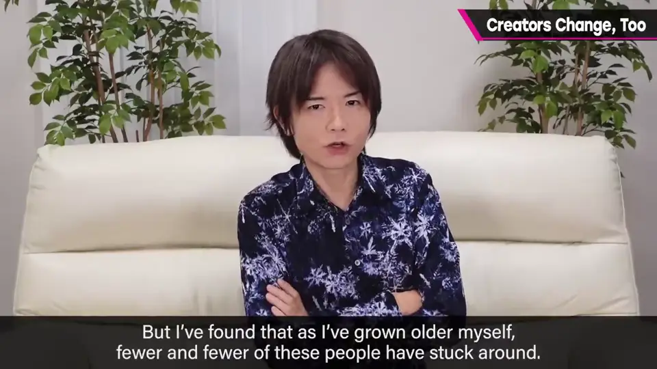
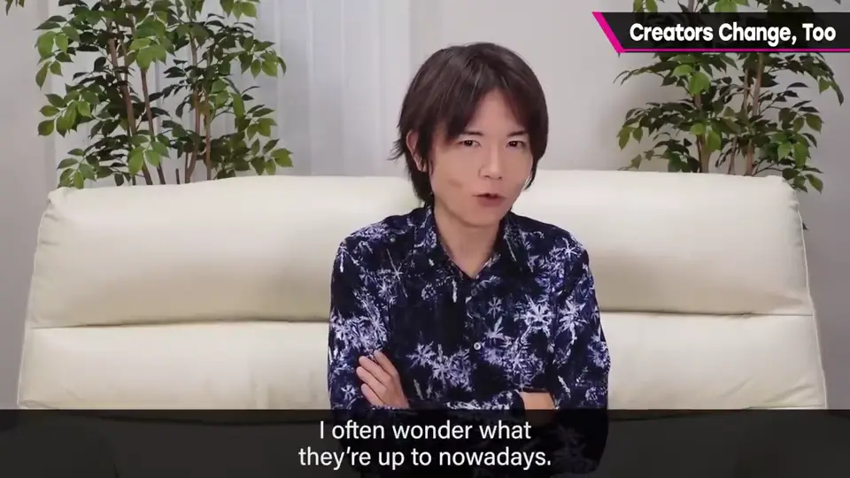
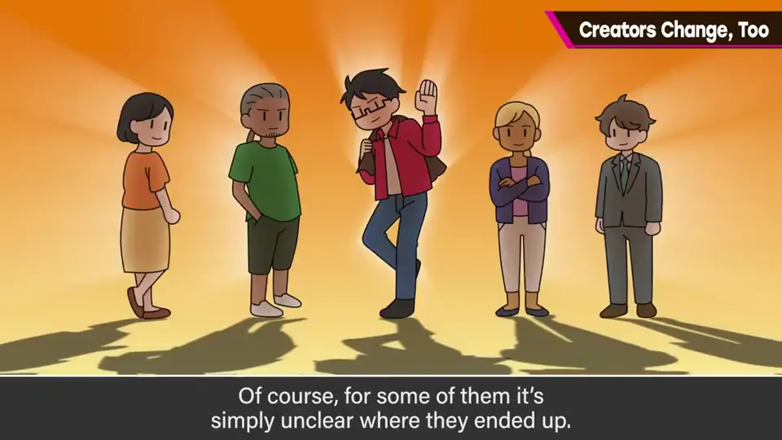
退休之类不说，中途从游戏业消失的人多得是——当然也有很多只是他不知道去向。
2. 别说「那家伙完了」 0:39
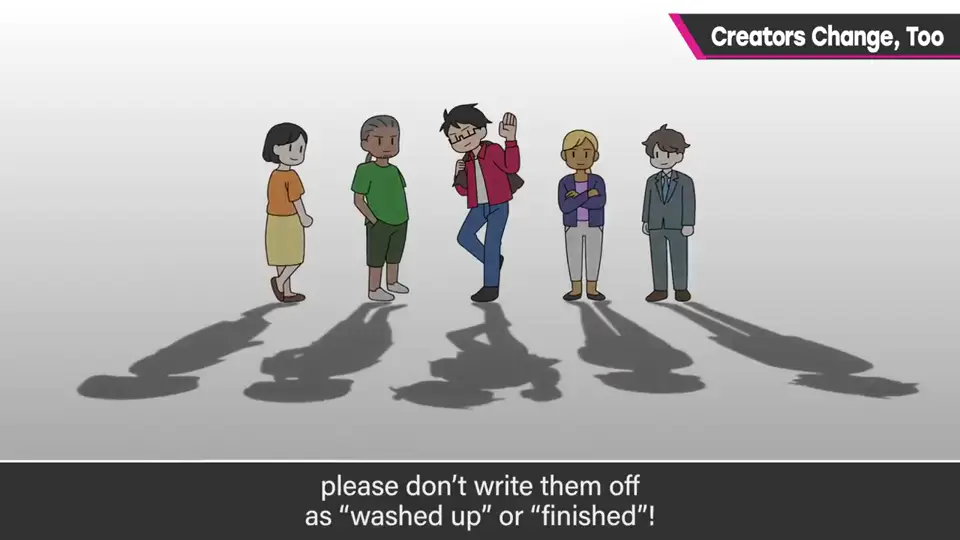
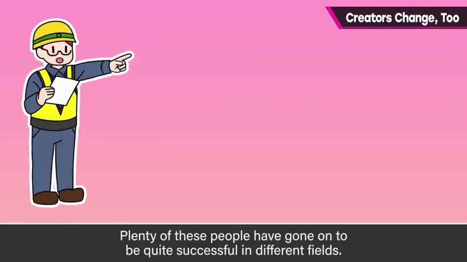
- 意外地，有人在其他行业大获成功。
- 有人取得专利赚了大钱。
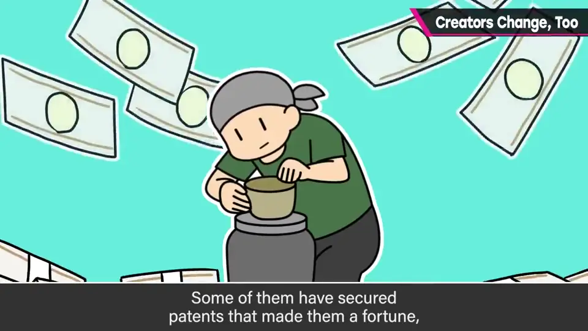
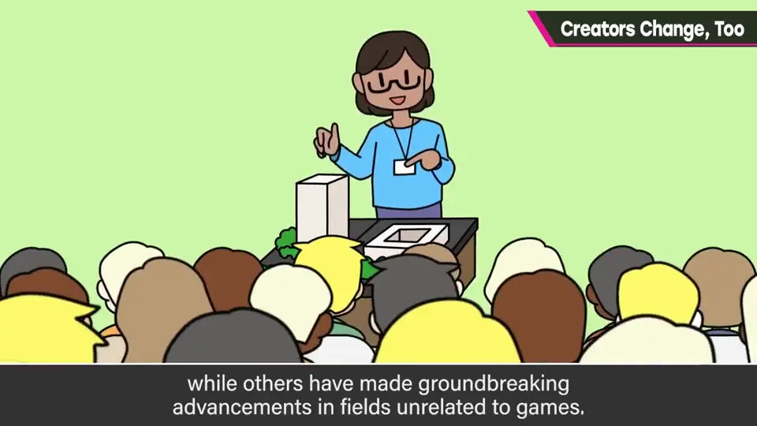
- 有人在与游戏无关的行业做先进的事。
- 即使活跃得不显眼，本人也可能找到了充实的工作。
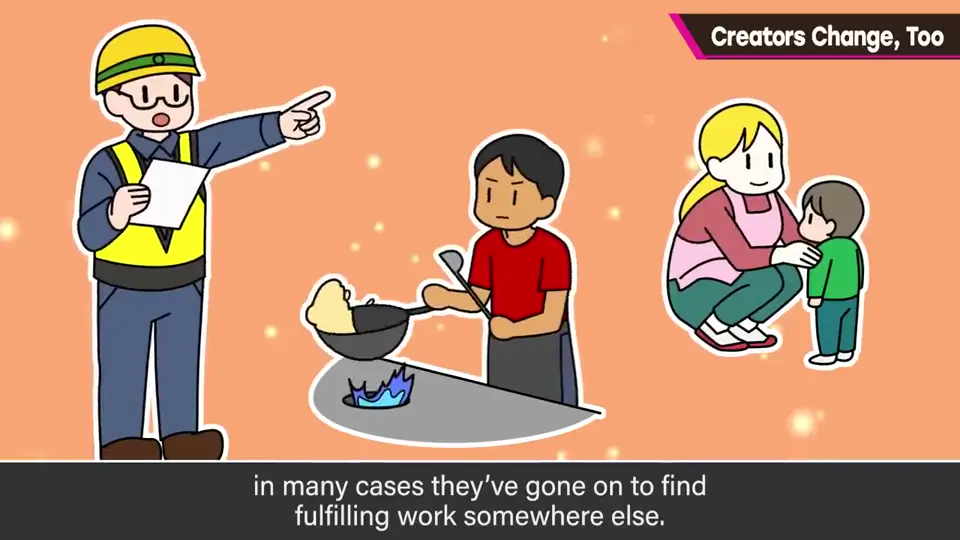
3. 改变是自然的 1:14
经验累积后开始做不同的事很自然，一直待在同一个位置反而可能不普通。
创作者未必一直做符合当时顾客或粉丝期望的事，但最好不要否定——也许在别处更被需要。
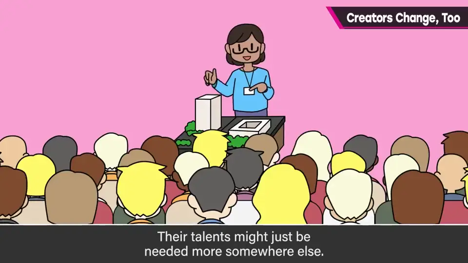
4. 各自的道路 1:40
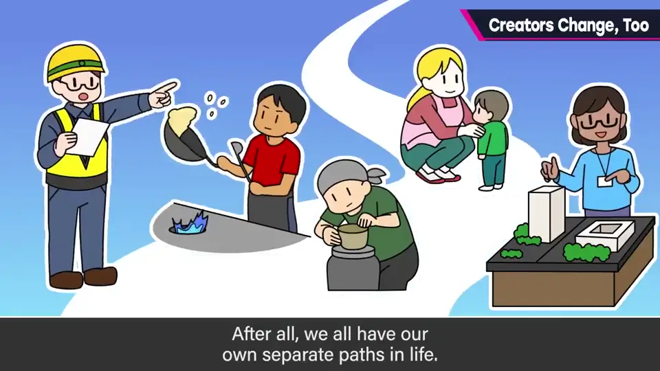
5. 樱井自己 2:02
至于他自己，目前还在做游戏；但也在做这个频道，以前没做过这种事——也算稍微改变了立场的结果吧。
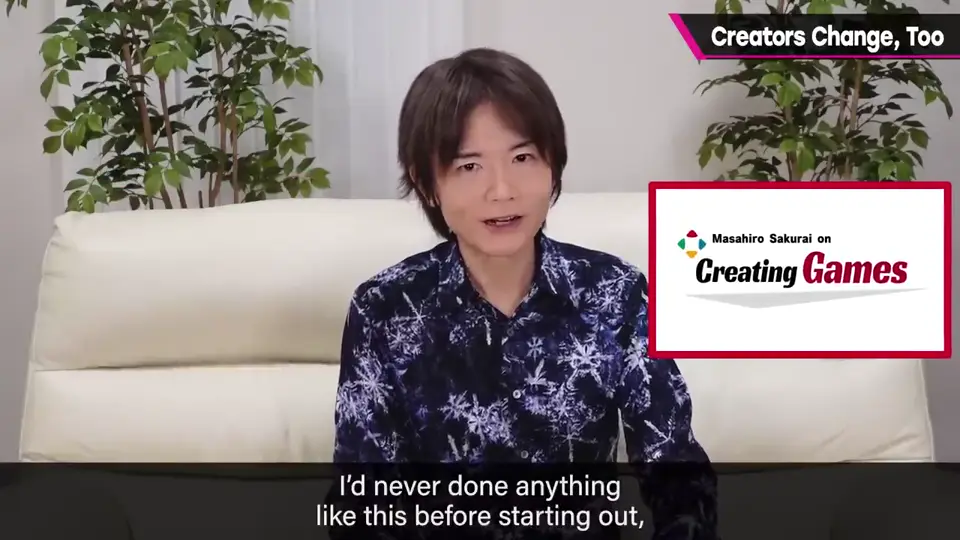
自测题
1. 当认识的创作者音讯全无时，樱井希望大家别怎么做？
别说「那家伙完了」——他们可能在别处成功或找到了充实的工作。 0:48
2. 为什么说改变是自然的？
经验累积后做不同的事很自然，一直待在同一位置反而不普通。 1:20
3. 樱井自己有什么「改变」？
仍在做游戏，但开始做这个 YouTube 频道。 2:08